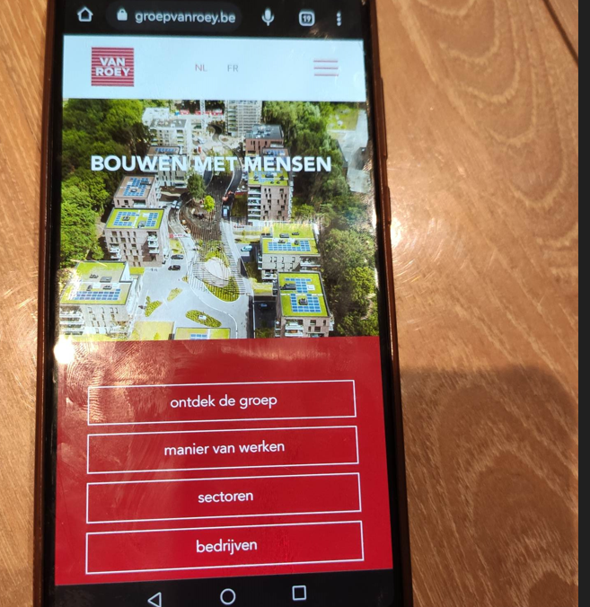

Dagverslag maandag
Mijn dag startte om 8 uur, toch een beetje spannend.
Ik werd opgevangen door Martin. Mijn collega's zijn Michael, Joeri, Paul,.... met hen zal ik deze week het IT-gebeuren van het bedrijf leren kennen.
Server en beveiliging
Dan ben ik gaan kijken naar de server van het bedrijf.
Nadat ik de server heb mogen bekijken, mocht ik ook de UPS bekijken.
Een UPS is voorzien voor de noodstroomvoorziening. Nadien mocht ik met Michael mee helpen bij de helpdesk. Ook heb ik de firewall mogen bekijken.
De helpdesk
Nadien mocht ik voornamelijk mee kijken, het was toen ook heel druk. Af en toe mocht ik een beetje meehelpen: bv. een laptop klaarmaken. Om twaalf uur hadden we onze middagpauze.
Na de middag hebben we laptops van beneden naar boven verplaatst.
Ik heb ook een gsm en een tablet mogen instellen. Vandaag ben ik veel mensen tegengekomen aan de helpdesk, ieders met zijn eigen laptop probleem.
Wat heb ik geleerd?
Mijn interesse lag vooral bij de server te bekijken en problemen bij klanten op te lossen.
Ik heb al veel geleerd over hoe ik gsm's moet instellen en hoe databanken noodzakelijk zijn in bedrijven.
Ook heb ik een beetje geleerd over de firewall.
Ik vond dat het goed ging omdat ik zelf heb kunnen meehelpen.
Graag zou ik nog meer willen leren over het programmeren en hoe het programmeren er in een bedrijf aan toe gaat.
Mijn stagedag eindigde om 17 uur.
Mijn stagedag in 1 woord : druk.
